버디맨으로 할 수 있는 것
스코어를 적는 것부터 모임 월례회 시상까지. 실제 화면으로 하나씩 보여 드릴게요. 모두 가입 없이 바로 써 볼 수 있어요.
골프 스코어 기록
혼자도, 동반자와 함께도. 앱이 없어도 링크로 바로 같이 적어요.
큰 버튼 하나로 시작
홈 화면 맨 위 [라운드 기록 시작]만 누르면 돼요. 사진 기록, 코드 참여, 내 기록, 모임 대회도 아이콘 하나로 바로 가요.
- 평균·베스트·라운드 수가 쌓여요
- 이번 달 버디맨 TOP 10 순위
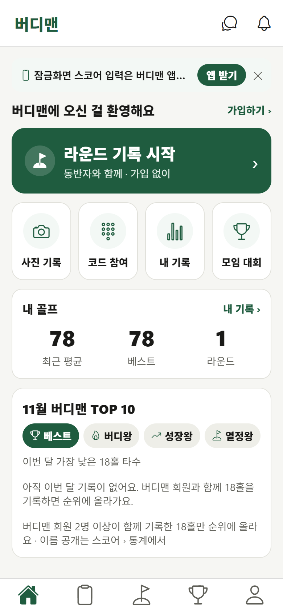
골프장·날짜·동반자, 10초면 끝
골프장 이름이나 초성으로 찾으면 홀별 파·거리가 자동으로 들어와요. 날짜는 오늘이 기본, 동반자는 이름만 적으면 돼요.
- 해외 골프장도 기록
- 동반자가 만든 카드에는 4자리 코드로 참여
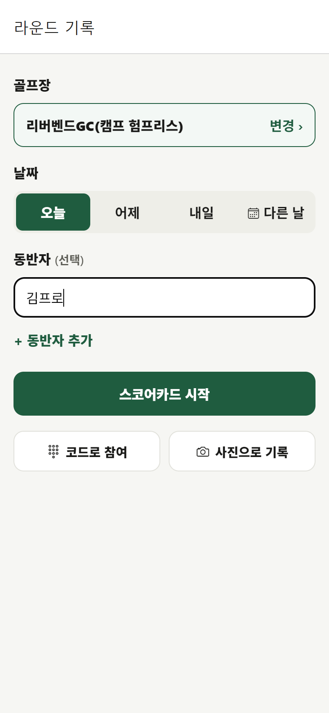
버디·파·보기, 한 번 누르면 기록
큰 버튼으로 장갑 낀 손도 잘 눌려요. 동반자 점수도 대신 적을 수 있고, 한 명만 적어도 모두에게 바로 보여요.
- 홀마다 AI 캐디가 내 기록으로 공략 한마디
- "파, 보기" 하고 말로 적기
- 퍼팅·티샷·벌타·벙커도 원하면 기록
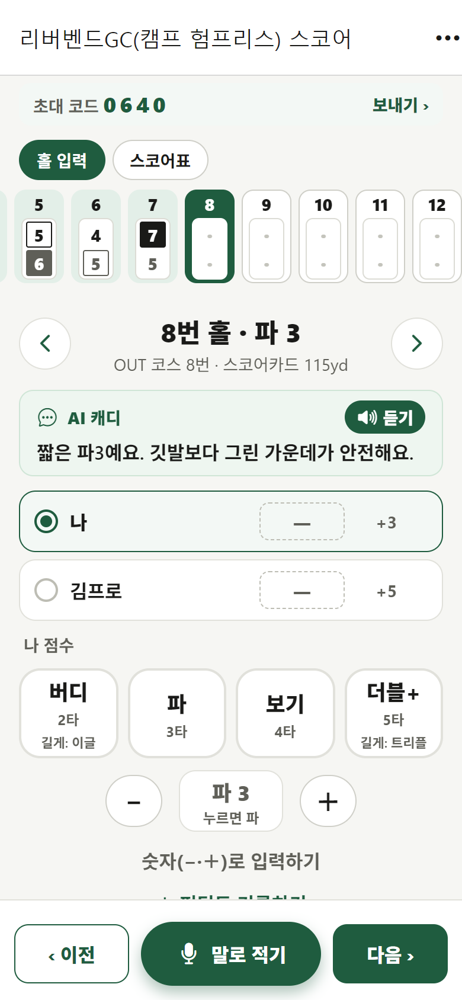
종이 스코어카드처럼 한눈에
버디는 동그라미, 보기는 네모. 칸을 누르면 바로 고칠 수 있어요. 비용 나누기와 내기 계산도 여기서.
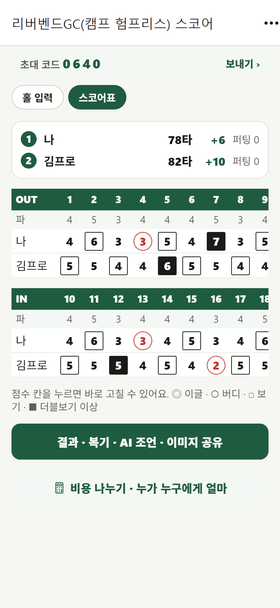
아이폰 잠금화면에서 입력
폰을 열지 않고 − · + · 다음
잠금화면과 다이내믹 아일랜드에 지금 홀 스코어가 떠요. 나와 동반자 점수를 차례로 넣고 다음 홀로 넘어가요.

종이 스코어카드도 사진 한 장
카트에서 받은 스코어카드를 찍으면 끝
종이 스코어카드나 골프장 문자 캡처를 올리면 AI가 홀별 타수를 읽어 기록으로 바꿔요. 테두리를 자동으로 찾아 반듯하게 펴요.

라운드 결과와 복기
결과 이미지로 단톡방에 공유
전반·후반, 버디 몇 개, 동반자 순위까지 한 장에. [이미지로 공유]를 누르면 바로 보낼 수 있어요. 동반자는 링크에서 자기 이름을 누르면 그 기록이 자기 것으로 저장돼요.
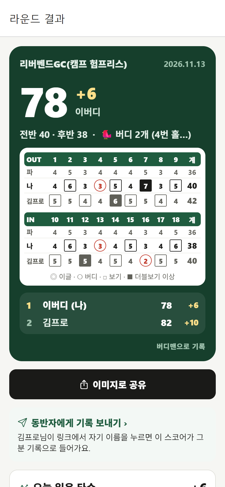
"그 홀만 아니었으면…"
아까운 홀만 보기였으면 몇 타였는지, 전반·후반 흐름, 베스트 홀을 보여 줘요. AI 코치에게 평가를 받고, 같이 친 멤버와 다음 약속도 잡아요.
- 내기 정산
- 이 멤버로 또 치기 · 모임으로 저장
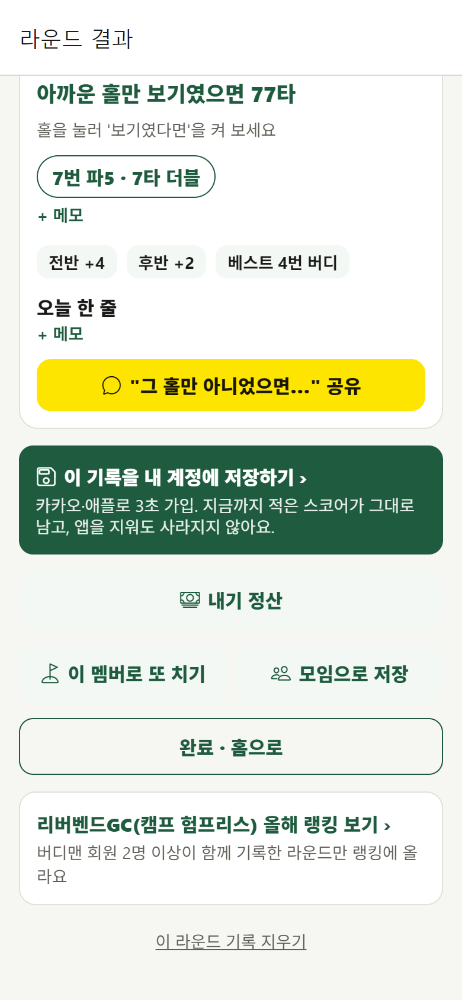
모임 월례회 · 골프 대회 운영
총무님의 엑셀 계산을 버디맨이 대신해요. 참가자는 언제나 무료예요.
엑셀 조 편성표를 붙여넣기
이름만 적거나, 엑셀·카톡에 있는 조 편성표를 그대로 붙여넣으면 조가 나뉘어요. 60명도 1분이면 돼요.
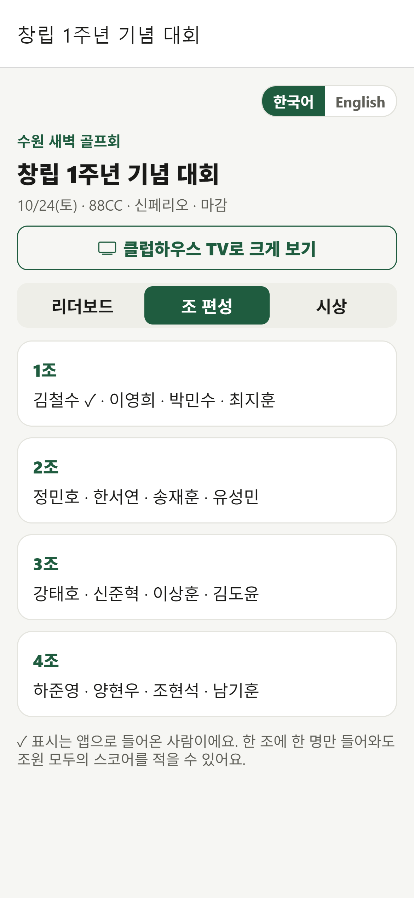
링크 하나로 조마다 입력, 순위는 실시간
단톡방에 링크를 올리면 조마다 한 명이 가입 없이 스코어를 적어요. 경기 중에도 순위가 계속 바뀌어요.
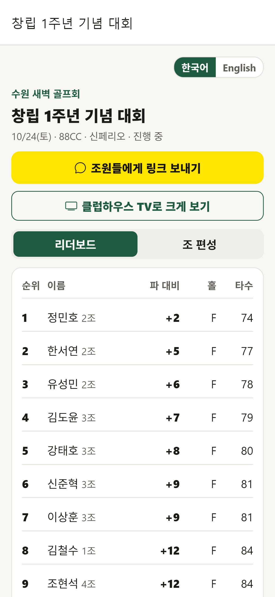
신페리오 · 시상 자동
마감하면 신페리오 순위가 바로
숨김홀 12개로 핸디캡과 네트 스코어를 자동으로 계산해요. 메달리스트, 니어, 롱기까지 시상표가 이미지로 나와요.
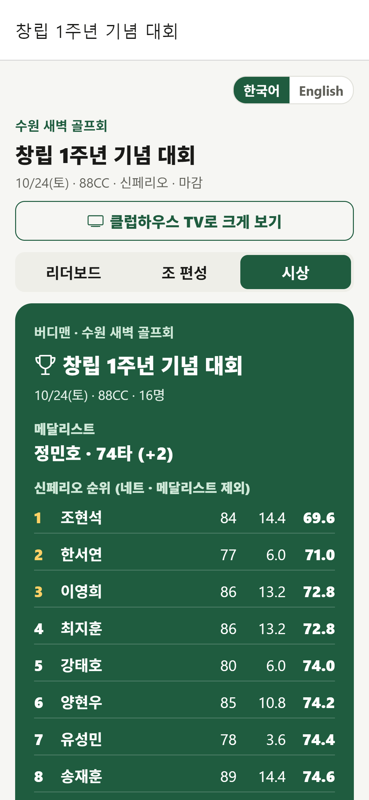
다버디·다파·다보기, 행운상 추첨까지
특별상도 자동으로 골라요. 행운상은 순위권을 빼고 추첨해요.
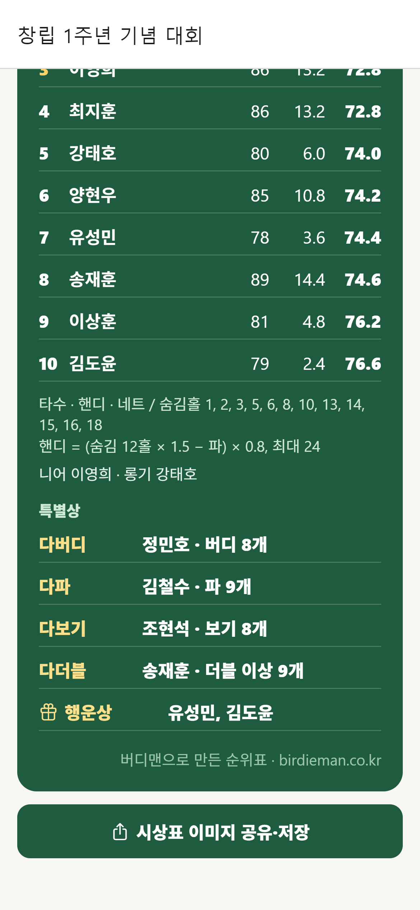
클럽하우스 TV에 순위 띄우기
TV·노트북에서 주소만 열면 15초마다 새로고침
식사 자리에서 모두가 같이 순위를 봐요.
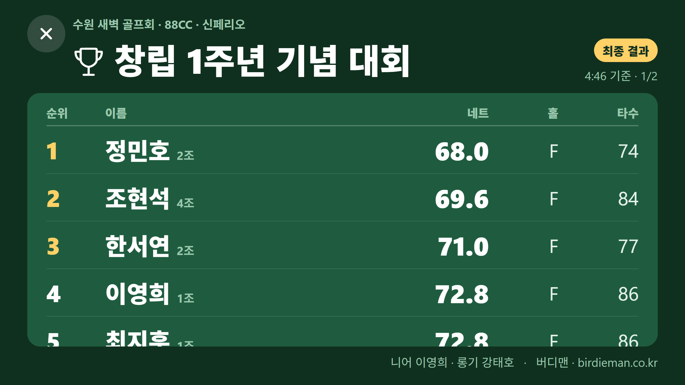
대회 운영 방법은 대회 운영 가이드에 자세히 있어요.